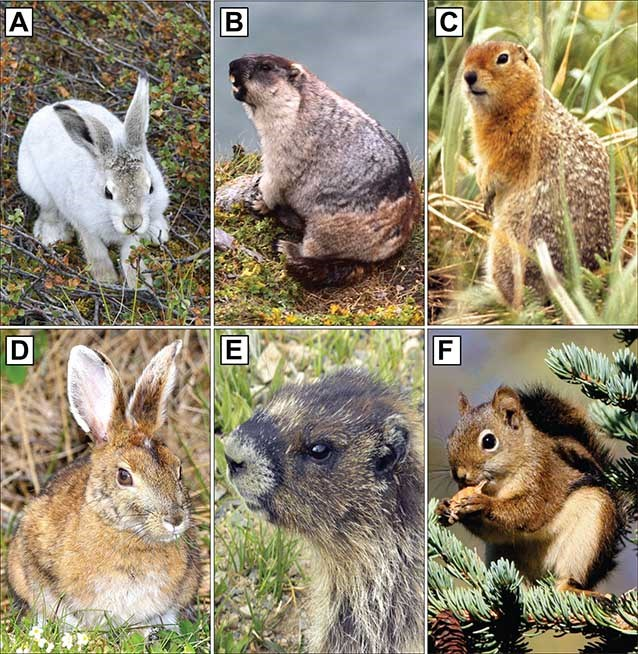
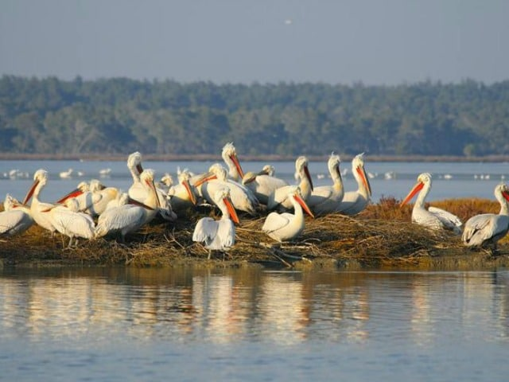
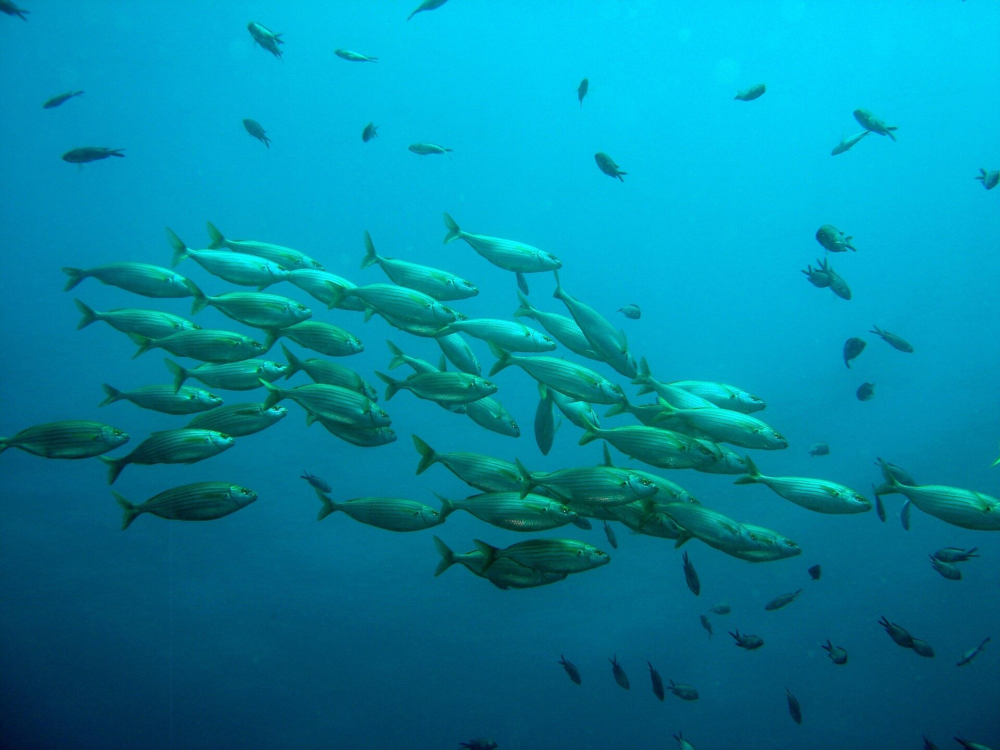

Kategoritë Kryesore



Kafshët Ujore
Jetojnë në dete, lumenj dhe liqene dhe janë pjesë e rëndësishme e natyrës.
Shiko më shumëZbulo disa nga kafshët më interesante që jetojnë në Shqipëri dhe mëso më shumë për botën e egër që na rrethon.
Shiko Kafshët


Jetojnë në dete, lumenj dhe liqene dhe janë pjesë e rëndësishme e natyrës.
Shiko më shumë